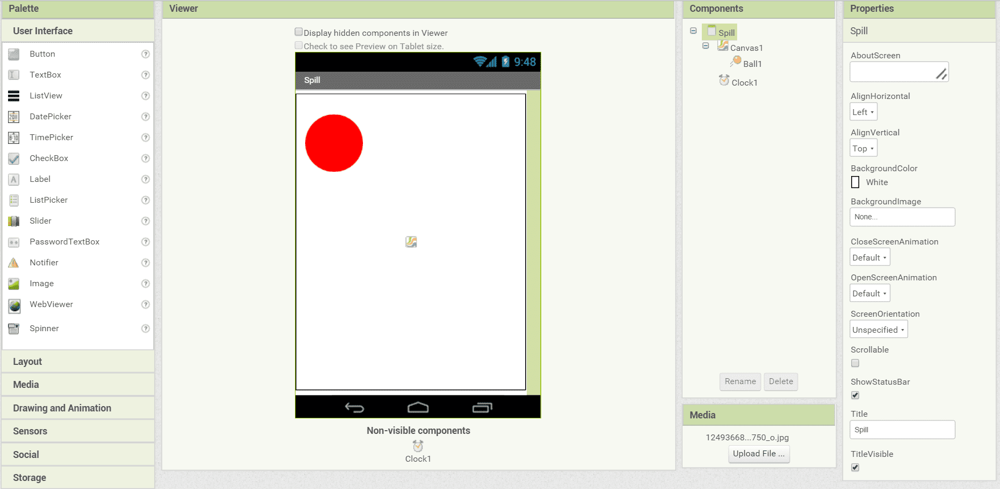
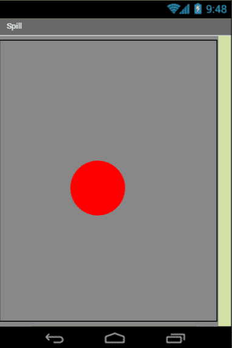
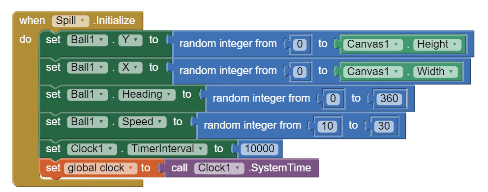
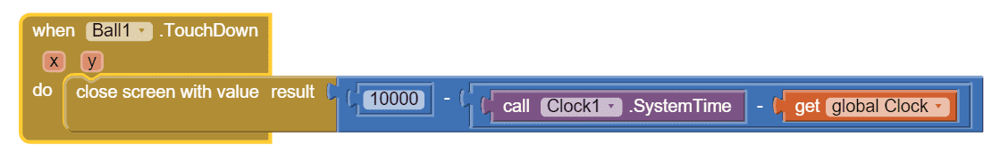
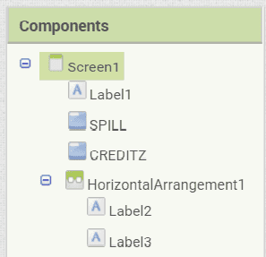
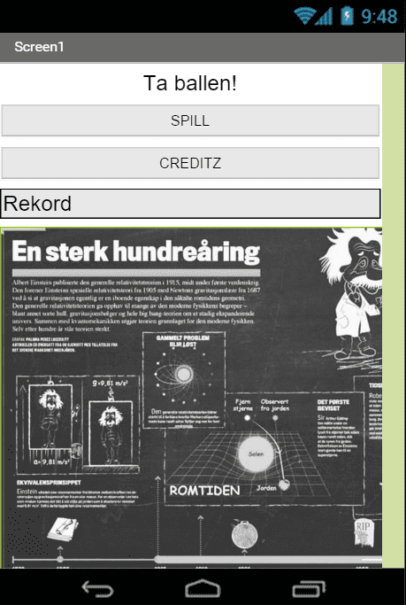
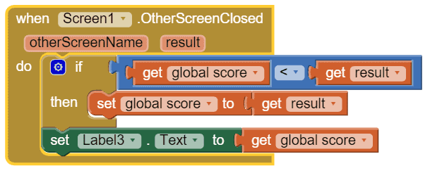

Nå skal vi lage en app som heter Ta ballen. For å lage denne appen så forutsetter vi at vi vet hvordan
MIT App Inventor fungerer fra
tidligere oppgavesett, og kan
utføre instruksjoner uten å få alt forklart i detalj. Denne appen går ut på at en ball spretter frem
og tilbake på skjermen, og du vinner ved å trykke på ballen med fingeren din. Dess kjappere du klarer
å treffe ballen, dess flere poeng får du. Dette er en ganske enkel app, men det er mulig å utvide
appen etter egne ønsker etterpå.

Steg 1: Opprette spillskjerm
Det første vi skal gjøre er å opprette en spillskjerm, og legge til en klokke og en ball.
Sjekkliste

Steg 2: Programmere spillet
Nå skal vi programmere spillet. Dette gjør vi ved å opprette flere funksjoner for å sjekke tiden
og poengene i spillet når ballen blir trykket på. Vi må også bestemme hvordan ballen skal bevege
på seg i spillet.
Sjekkliste


Steg 3: Designe menyen
Nå vi starter appen, så kommer vi til en meny. Der skal vi vise poengsummen fra spillet,
og ha muligheten til å starte spillet på nytt.
Sjekkliste


Steg 4: Programmere menyen
Nå som menyen er designet ferdig, er vi nødt til å programmere den slik at noe skjer når vi trykker på knappene.
Sjekkliste

Steg 5: Opprette krediteringskjerm
Når vi har laget en app så er det litt gøy at det står hvem som har laget den,
og det skal vi nå lage en egen skjerm for å vise.
Sjekkliste
Forbedre denne siden
Funnet en feil? Kunne noe vært bedre? Hvis ja, vennligst gi oss tilbakemelding ved å lage en sak på Github eller fiks feilen selv om du kan. Vi er takknemlige for enhver tilbakemelding!